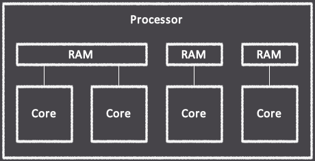
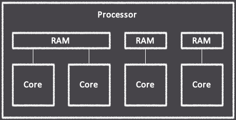

Memory Architecture
Each processor core has 16 bytes of L1 cache, identified as registers R0 through R15.
It is important to note that R0 is used to store the program instruction pointer, so
writing to this value has the effect of jumping to a specific instruction. L1 cache can
be written to and read from in a single clock cycle and therefore is the preferred method
of saving data when possible.
When more memory is needed, 224 bytes of L2 cache is available in the form of a true dual-port block memory module that is instantiated for each core. It is possible for a pair of cores to utilize the same block memory module for the purpose of sharing data between executing threads. While the L2 cache offers extended memory to a core, a read operation takes two clock cycles to complete. The block memory module is configured in WRITE_FIRST mode, which means that a core can immediately read a value from an address that it has just written to, effectively making write operations complete in one clock cycle.

The xT50 assembly and Tranquil languages use different syntax for grouping cores together in order to share memory between them. See their respective documentation for more details.
When more memory is needed, 224 bytes of L2 cache is available in the form of a true dual-port block memory module that is instantiated for each core. It is possible for a pair of cores to utilize the same block memory module for the purpose of sharing data between executing threads. While the L2 cache offers extended memory to a core, a read operation takes two clock cycles to complete. The block memory module is configured in WRITE_FIRST mode, which means that a core can immediately read a value from an address that it has just written to, effectively making write operations complete in one clock cycle.

The xT50 assembly and Tranquil languages use different syntax for grouping cores together in order to share memory between them. See their respective documentation for more details.